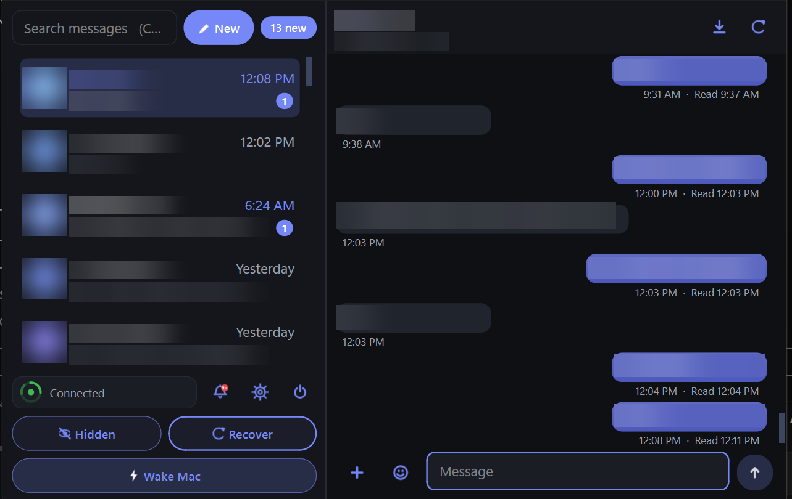
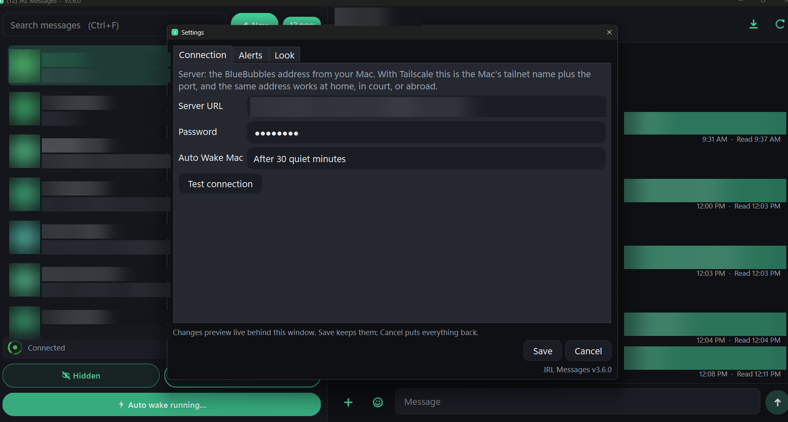
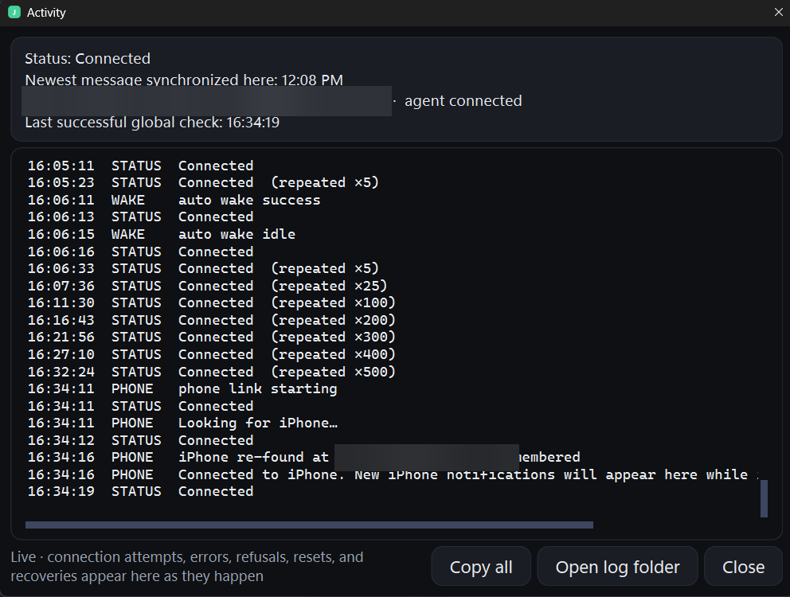
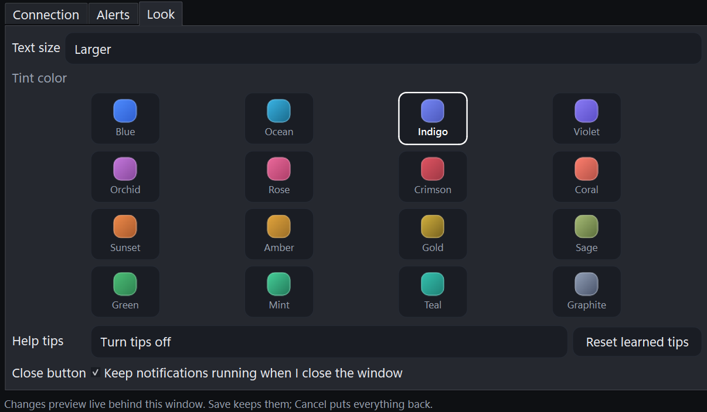

Blue bubbles, group chats, attachments, verification-code popups and real desktop notifications — relayed through a Mac you own, over a private network only you can see. No cloud middleman ever holds your messages.
It was built by a practicing lawyer with exactly one requirement: never miss a message. Every design decision on this site follows from that sentence.

Contact names, numbers and message text are redacted in every screenshot on this site.
Your Mac stays home, signed into your Apple ID, acting as a relay you control end to end. Your PC — a laptop, anywhere in the world — runs two cooperating processes.
No Firebase, no Cloudflare tunnel, no third-party relay. BlueBubbles runs in plain LAN URL mode; Tailscale makes that address privately reachable from anywhere.
macOS changes constantly, so talking to Messages.app is delegated to BlueBubbles, whose whole job is tracking those changes. The unusual part — an aggressively complete Windows client — is custom.
The pipeline that receives messages contains no UI code at all. A crash in the window cannot stop collection, and the two are debugged separately.
Services that rent you a Mac in a data centre hold your Apple ID and every message on hardware you cannot inspect. You are trusting a stranger with your entire message history.
Clients that impersonate Apple’s protocol get shut down. They are exciting for a season and then they stop working, usually without warning.
The built-in iMessage bridge is shallow: no history, weak group support, and silent gaps. Fine as a notification fallback; not something to run a practice on.
The two-machine design is the honest architecture. It costs a spare Mac; it buys a private, inspectable, repairable message pipeline.
Push notification is treated as a latency optimisation, never as the source of truth. Truth is established by reconciliation against the Mac’s own message database.
Walks the Mac’s database in fixed ROWID windows, with short-read protection, a continuous tail audit, a 24-hour wall-clock repair pass and a rolling archive audit. Late-inserted iCloud messages cannot create a silent gap.
Automatic, verified repair of Apple’s idle-holding behaviour, where Messages.app quietly delays handing over new texts until it is poked. Detected, repaired, then checked that the repair actually produced rows.
A watchdog, a supervisor script, a Startup entry and an hourly scheduled-task failsafe. Duplicate launches are harmless by design: a second copy detects the first and exits.
Sound is decoupled from the popup and fires first. Storm protection stops a reconnect back-fill from firing a burst of stale alerts. A delivery ledger prevents duplicates across restarts.
Detected, shown prominently, and offered with Copy and Fill buttons, plus inline Copy chips in the thread. The single most-used convenience feature in daily practice.
234 unit tests and four end-to-end harnesses. The pattern repeats: a field report arrives, the failure is reproduced in a test, the fix lands, and the test stays forever with a name that tells the story.
Every screenshot below is from a real installation, with names, numbers, message text, the private server address and the phone’s Bluetooth identifier permanently removed.



One feature is explicitly unreliable today: mirroring the iPhone’s own notification banners (from other apps) to the PC over Bluetooth. It sometimes works and usually does not, for deep reasons set out on the known issues page.
It is off by default and completely separate from messaging. iMessage itself never touches Bluetooth and works regardless — the app runs fine on a PC with no Bluetooth hardware at all. This is the project’s main open problem and the most valuable place to contribute. Read the full analysis →
Do you really need a Mac? Does it work abroad? What happens when the Mac sleeps? Who can read your messages? Answered plainly, in one place.
Read the FAQField reports, code, and Mac-side hardening are all welcome. Bug reports with a version number, an Activity log and a screenshot have driven every fix in this project’s history.
Open an issue